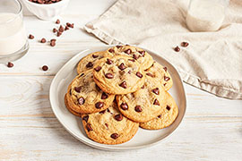

Это моя первая HTML страница
Вроде пока дела идут неплохо
Давайте добавим рецепт вкусного печенья с шоколадной крошкой
Давайте прикрепим сначала фото уже готовых печенек

Вот что требует рецепт:
Ингредиенты (Возможно не те...)
- 6 яиц
- 2 чашки муки
- 2 ч.л. ванильного экстракта
- 2 ч.л. разрыхлителя
- 1 чашка сахара
- 1 пачка шоколадной крошки
Инструкции (могут быть не правильными)
- Добавь яйца, муку и ванильный экстракт и перемешай
- Добавь сахар и разрыхлитель и снова перемешай
- Застели пергаментом лист духовки
- Выкладывай тесто ложкой, придавая печенюшкам круглую форму
- Выпекай печенье в заранее разогретой до 190 градусов духовке около 20 минут
- Наслаждайся!
Ой, ты нам не доверяешь? Хочешь увидеть реальный рецепт? Можешь посмотреть его прямо здесь